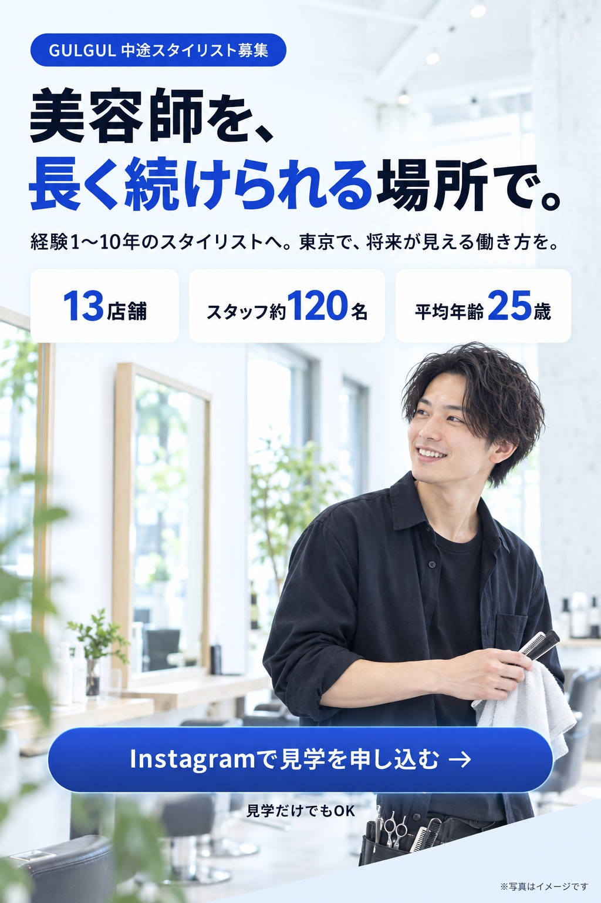
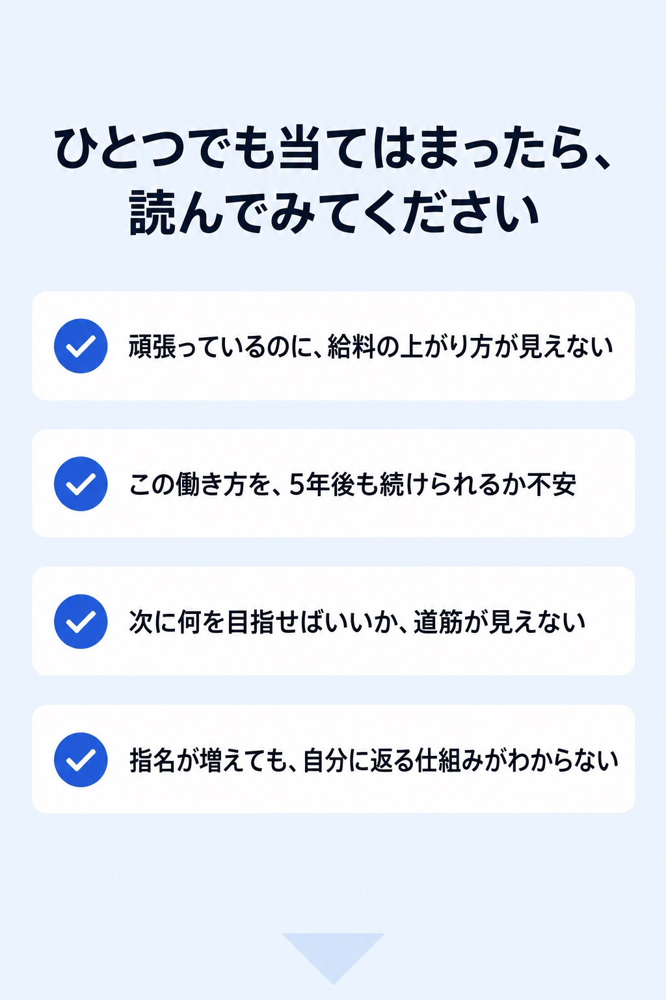
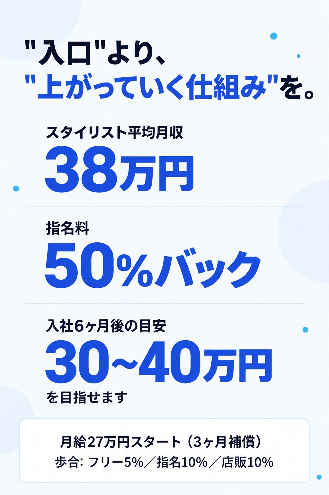
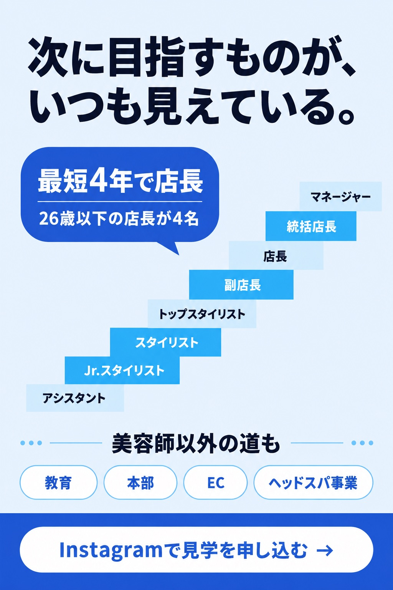
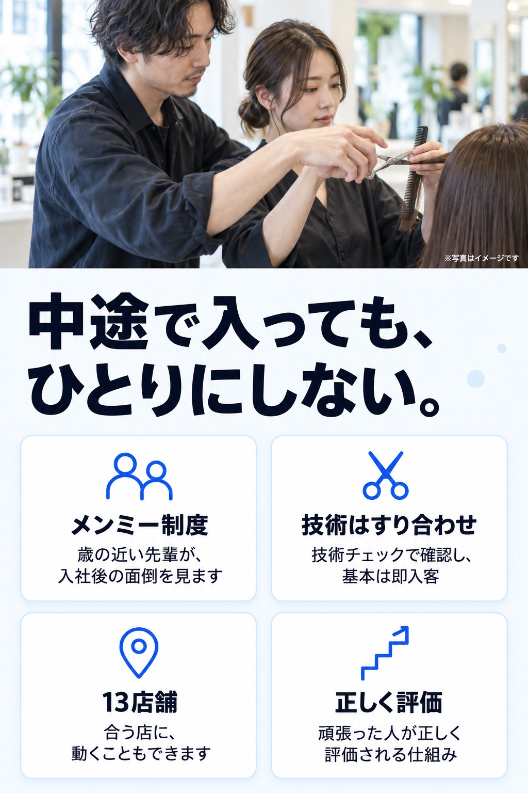
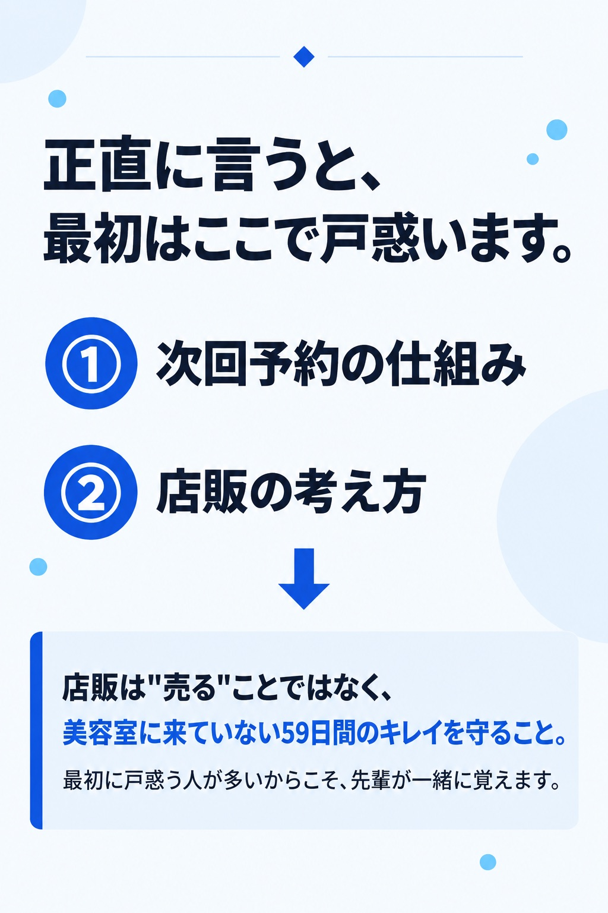
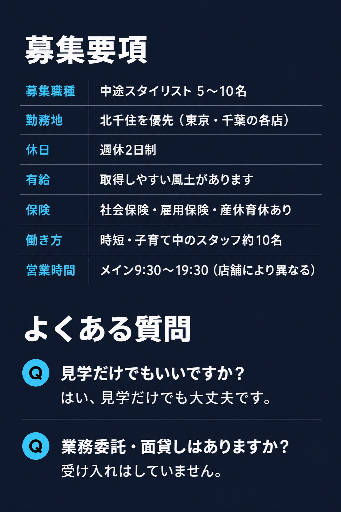
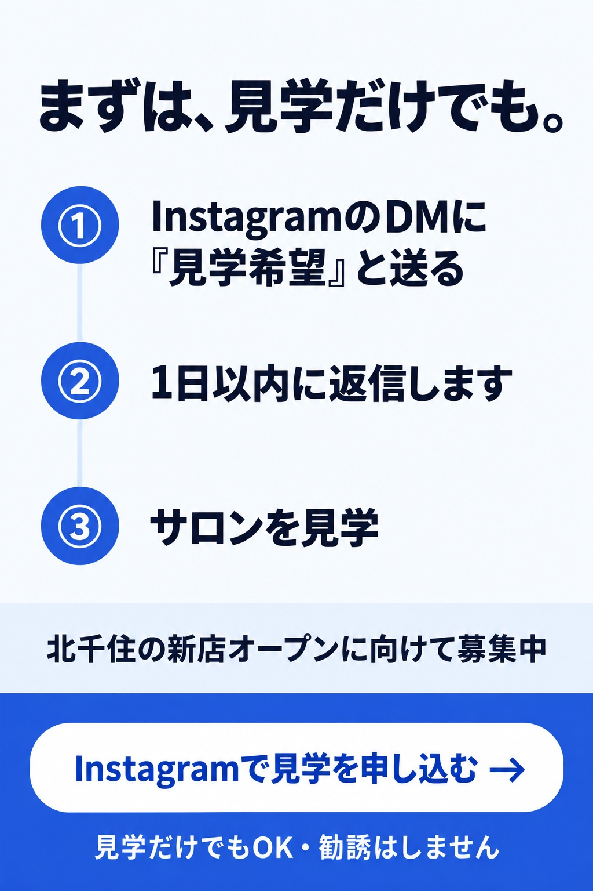

美容師を、長く続けられる場所で。GULGUL 中途スタイリスト募集
経験1〜10年のスタイリストへ。東京で、将来が見える働き方を。13店舗・スタッフ約120名・平均年齢25歳。見学だけでもOK。

ひとつでも当てはまったら、読んでみてください
- 頑張っているのに、給料の上がり方が見えない
- この働き方を、5年後も続けられるか不安
- 次に何を目指せばいいか、道筋が見えない
- 指名が増えても、自分に返る仕組みがわからない

"入口"より、"上がっていく仕組み"を。
スタイリスト平均月収38万円。指名料50%バック。入社6ヶ月後の目安30〜40万円を目指せます。月給27万円スタート（3ヶ月補償）。歩合: フリー5%／指名10%／店販10%。

次に目指すものが、いつも見えている。
アシスタント→Jr.スタイリスト→スタイリスト→トップスタイリスト→副店長→店長→統括店長→マネージャー。最短4年で店長。26歳以下の店長が4名。美容師以外の道も：教育・本部・EC・ヘッドスパ事業。

中途で入っても、ひとりにしない。
メンミー制度：歳の近い先輩が、入社後の面倒を見ます。技術はすり合わせ：技術チェックで確認し、基本は即入客。13店舗：合う店に、動くこともできます。正しく評価：頑張った人が正しく評価される仕組み。

正直に言うと、最初はここで戸惑います。
①次回予約の仕組み ②店販の考え方。店販は"売る"ことではなく、美容室に来ていない59日間のキレイを守ること。最初に戸惑う人が多いからこそ、先輩が一緒に覚えます。

募集要項
- 募集職種
- 中途スタイリスト 5〜10名
- 勤務地
- 北千住を優先（東京・千葉の各店）
- 休日
- 週休2日制
- 有給
- 取得しやすい風土があります
- 保険
- 社会保険・雇用保険・産休育休あり
- 働き方
- 時短・子育て中のスタッフ約10名
- 営業時間
- メイン9:30〜19:30（店舗により異なる）
よくある質問
Q. 見学だけでもいいですか？ A. はい、見学だけでも大丈夫です。
Q. 業務委託・面貸しはありますか？ A. 受け入れはしていません。

まずは、見学だけでも。
- InstagramのDMに『見学希望』と送る
- 1日以内に返信します
- サロンを見学
北千住の新店オープンに向けて募集中。見学だけでもOK・勧誘はしません。